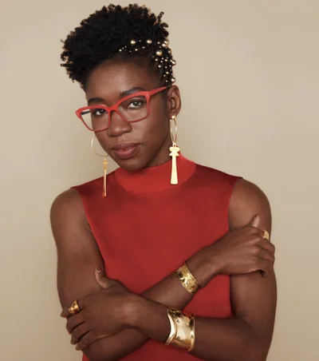

Kimberly Bryant

Kimberly Bryant is the founder of Black Girls Code, a nonprofit organization dedicated to increasing the representation of Black girls in technology fields. She created the organization after noticing the lack of diversity in engineering spaces and wanting to create opportunities for the next generation.
Through workshops, coding programs, and mentorship initiatives, Black Girls Code works to close the representation gap in STEM fields. Bryant challenges structural inequality in tech by addressing barriers early in education.
Her work demonstrates how leadership in technology can extend beyond product development and into equity and community building.
Learn more: Black Girls Code
Joy Buolamwini
Joy Buolamwini is a researcher and advocate for algorithmic accountability and AI ethics. She is the founder of the Algorithmic Justice League, an organization that investigates and raises awareness about bias in AI systems.
Her work focuses on ensuring that artificial intelligence is developed and deployed in ways that are fair, transparent, and inclusive. She wrote the best-selling book Unmasking AI: My Mission to Protect What is Human in a World of Machines. Her work is extremely important in this new field that is rapidly evolving and shaping our future and if not handled correctly could further disenfranchise minorities especially those of intersecting identities. Her work has already uncovered large racial and gender bias in AI services from major companies such as Microsoft, IBM, and Amazon.
Learn more: Algorithmic Justice League | Joy Buolamwini's Website | TED Talk: How I'm Fighting Bias in Algorithms | NPR Article | Wired Article | BBC Interview | LinkedIn Profile
Zuheb's Tech Hero Name

Zuheb's Tech Hero Bio